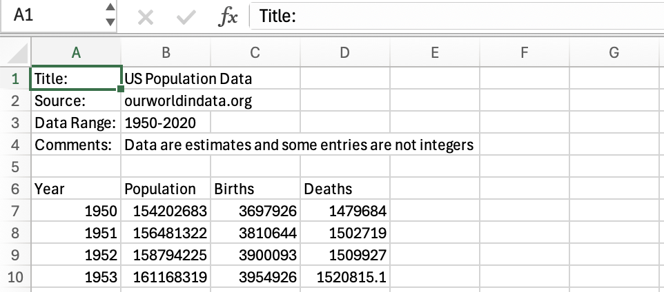
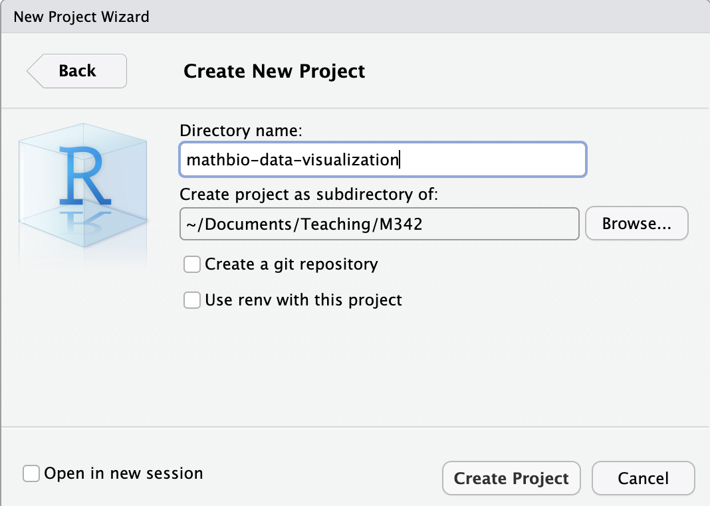
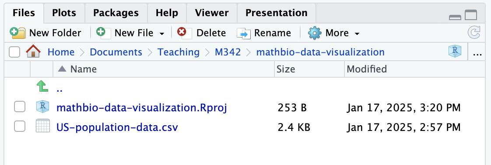
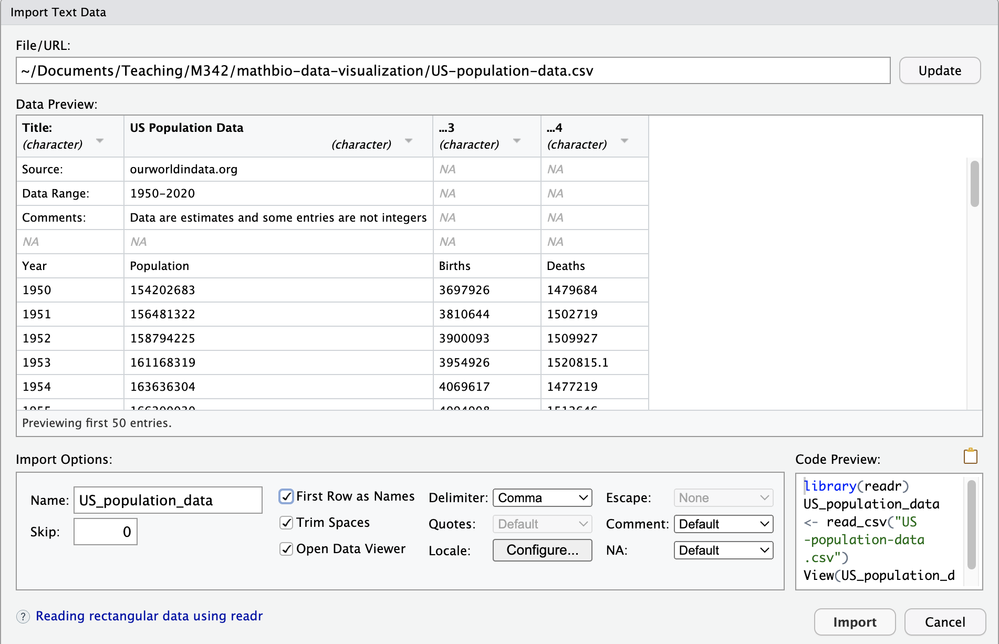
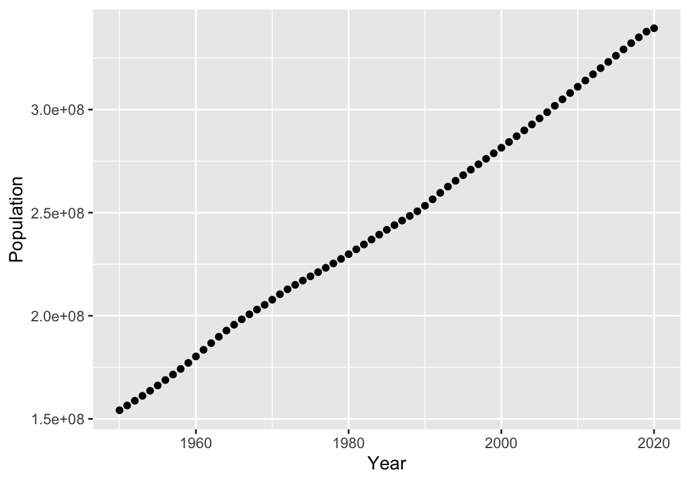
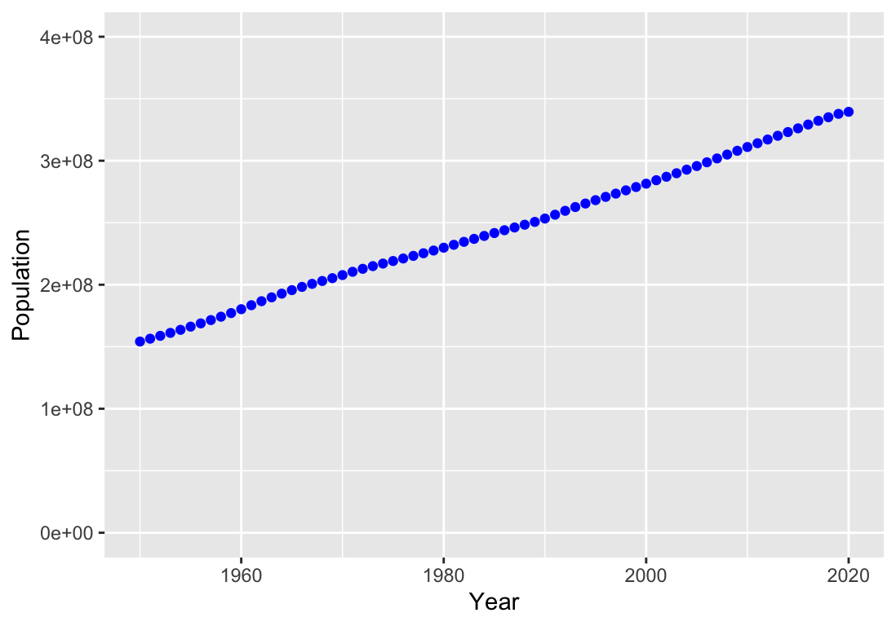
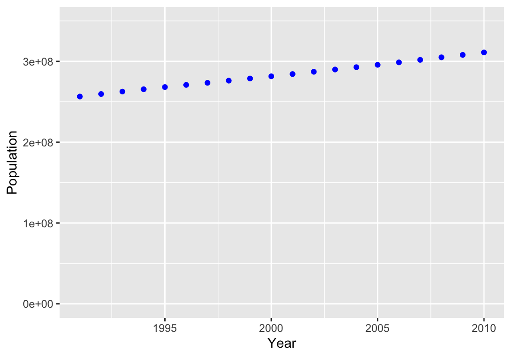
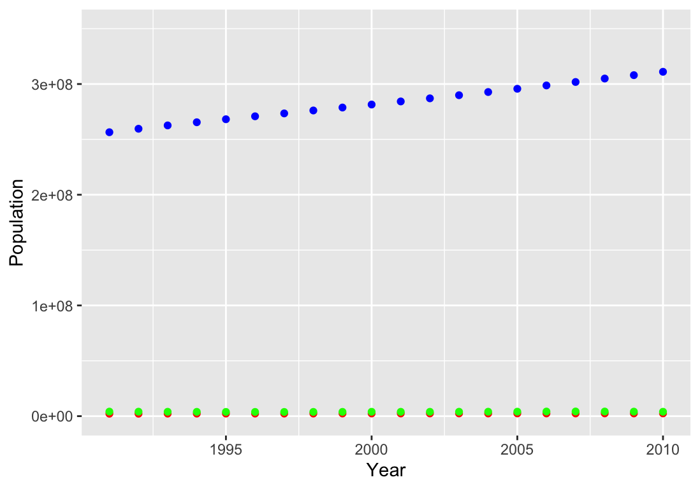
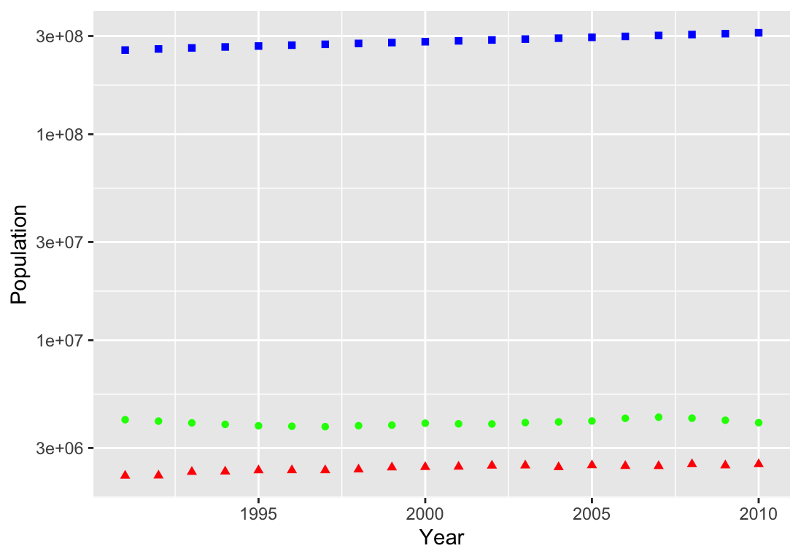
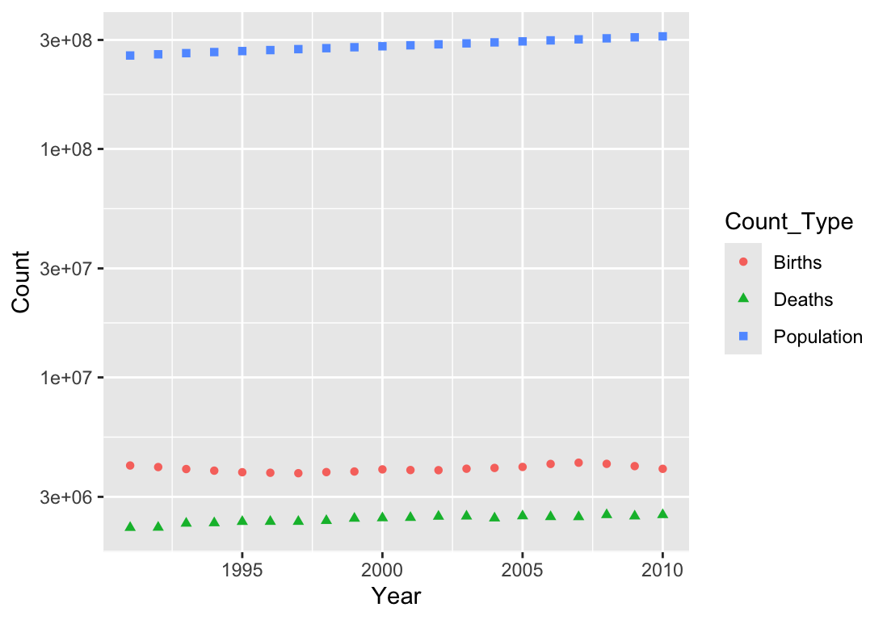

Section 1.5 Introducing tidyverse and ggplot
In this course, we will be learning to use R and the tidyverse set of packages for our data visualization. So-called tidy data is organized in tables where each state variable is a column, and each row is the collection of the values for all state variables for a given experimental state. These tables are often put together in a spreadsheet. We will learn to deal with tables that have been exported as
csv files, which stands for “comma-separated values”. Our data should be organized to have only contain one table per file. The data introduced in Example 1.4.2 is a subset of the data found in US-population-data.csv.We will import the US population data into R and visualize different relationships between the state variables. When data files are not too large, it is often convenient to open them directly in a spreadsheet application to see how the file is organized. The first 10 rows of the US population data file are illustrated in Figure 1.5.1.

US-population-data.csv in Microsoft ExcelNotice in this file that there are several lines describing the data. This is called metadata and contains information about the data but that are not actually part of the data. Often, metadata is stored in a companion file associated with our data files. The metadata is not part of our desired import, so we will want to skip the first five (5) lines of the file. The sixth row contains the names of our state variables, and the data begin in the seventh row.
We will import the data into R using the
read_csv function. Open RStudio and create a new project. If you are working on your own computer, you can have as many different projects as you desire. If you are working with RStudio on posit.cloud, then your license imposes a limit to the number of projects, and you may wish to use a project for multiples examples. Since this is our first example, we will illustrate the process using a project for data visualization associated with the course.
I named my project “mathbio-data-visualization” and downloaded the data file to be saved in the resulting folder.

If you click on the data file, you have the option of viewing the file or importing the data set. We will import the data set. An import wizard page opens showing you the import options. In the corner of the wizard is the R code that we will use. Using code has the important consequence of allowing us to create reproducible analysis processes. If we want to come back and repeat our work, a saved sequence of code will allow us to know exactly what we did the last time.

As we noted earlier, we want to skip the first five rows of metadata. One of the wizard options is an option
Skip to indicate how many rows are skipped, and we type 5. Notice that once we do this, the wizard anticipates how our data is structured. We are given a chance to set the Name of our imported table, but the default value of “US_population_data” seems completely adequate. There is another option First Row as Names that was selected by default. The option Open Data Viewer will cause RStudio to open a table viewer after import that will give us a spreadsheet-like view of the resulting import. This is useful for our initial exploration, but we will not include that in our final script.library(readr)
US_population_data <- read_csv("US-population-data.csv",
skip = 5)
The function that does the import work is named
read_csv. Most functions in R are defined in various packages called libraries. Before we can use read_csv, we first need to unpack the readr library where the function was defined. The inputs, which are called arguments, to the function are listed between parentheses that immediately follow the function name and separated by commas. The first argument is the name of the data file. The read_csv had many other optional settings, one of which was skip, so when the code specifies that value, the name of the option is given where the code says skip = 5. Once this code has been evaluated, we can access the data table, which is now a structure called tibble, using the name US_population_data.To create a graph, we will use another of the tidyverse libraries called
ggplot2 that provides a graphing function ggplot. The first argument of ggplot, which creates a graphical object, is the data-frame or tibble containing our state variables. The attributes of this graphical object consist of aesthetic elements, such as titles and axes, and informative geometric objects that represent the data. It is common to define many of the aesthetic elements in the call to ggplot, by adding a mapping argument which creates connections (maps) between elements of the graph and our chosen features.When creating graphs of individual relationships between state variables, the \(x\)-axis and \(y\)-axis correspond to specific variables. Consequently, one common mapping connects the axes to specific variables in the data-frame or tibble. If we wanted to create a graph with
Year on the \(x\)-axis and Population on the \(y\)-axis, we would include the aesthetic assignment mapping = aes(x = Year, y = Population). In addition, we need to add a geometric representation of our data, which for a scatterplot are points \((x,y)\) representing values from our state variables. Such a graph would be created from the commands shown in the following listing.library(ggplot2) # Only required before our first use of ggplot
ggplot(US_population_data,
mapping = aes(x = Year, y = Population)
) +
geom_point()

What do we notice about this graph? One thing is that we have much more data than the original data in our earlier table. The data file just contained many more years than the original table shown in the text. We would like to restrict our focus on the more narrow range of years. Secondly, we might notice that the \(y\)-axis range was chosen to give a good spread of our data but does not properly represent size as the value \(y=0\) is not on the axis. We might want to know how to force the axis to set a scale of our choosing. Thirdly, we would like to add some color to the graph.
The second and third changes come by adding additional information to the graphical object. Because we are assigning a color to the geometric points, we can add that information as an optional argument to
geom_point. (Later we will have a desire to assign color based on other features and that will involve a different strategy.) Assigning limits to the axes correspond to functions xlim and ylim.ggplot(US_population_data,
mapping = aes(x = Year, y = Population)
) +
geom_point(color = "blue") +
ylim(0, 4e8)

The other requested change actually represents a desire to analyze a subset of the original data. While we might graphically get the result of interest by adding
xlim(1991,2010), we will be more authentic to our intent by creating a restricted data set. The library dplyr contains a function filter that accomplishes this important feat. Using a smaller data set, we also adjust the maximum value of the \(y\)-axis.library(dplyr)
focus_population_data <- filter(US_population_data, Year >= 1991 & Year < 2010)
ggplot(focus_population_data,
mapping = aes(x = Year, y = Population)
) +
geom_point(color = "blue") +
ylim(0, 3.5e8)

We might want to look at the other data values so that we can see how the number of births and deaths are related to the size of the population. One approach to accomplish this is to add two new geometric objects. Because the \(y\)-values of these new objects do not come from
Population, the geometric objects will add aesthetic updates to use Births and Deaths.ggplot(focus_population_data,
mapping = aes(x = Year, y = Population)
) +
geom_point(color = "blue") +
geom_point(aes(y = "Births"), color = "red") +
geom_point(aes(y = "Deaths"), color = "green") +
ylim(0, 3.5e8)

Because the number of births and deaths are just a small fraction of the size of the total population, the graphs for births and deaths are hard to visualize and nearly overlap one another in the figure. A common strategy for visualizing graphs where different data points have very different orders of magnitude is to use a logarithmic scale. We can update our graph to use a logarithmic scale by adding the option
scale_y_log10 in place of the fixed axes ylim. While we are at it, let us distinguish the points by using different shapes (see ggplot(focus_population_data,
mapping = aes(x = Year, y = Population)
) +
geom_point(color = "blue", shape = 15) +
geom_point(aes(y = Births), color = "green", shape = 16) +
geom_point(aes(y = Deaths), color = "red", shape = 17) +
scale_y_log10()

Curiously, the approach outlined above is not the recommended approach. We will take a quick side-trip to discuss an alternative approach. In reality, our graph consists of points all of the form \((x,y)\) where the \(x\)-value is a year and the \(y\)-value is either a population size, a number of births, or a number of deaths. It is cleaner to take our data and create a new data set with just two columns, say
Year and Count, with a new classification column Count_Type (spaces are problematic) that indicates which data point is being represented. The graphing tool then will run through a single geometric object but can provide different styling options based on the classification of the points. A nice side-effect of adopting this new strategy is that we get easy legends for our plot.The restructuring of our data is completed with the use of a command
pivot_longer (make the table longer by moving columns into extra rows), defined in the tidyr library. This restructured data is temporary, so we can pass it through to the ggplot command using a pipe, represented by the operator |>. A pipe takes the output of one function (pivot_longer) and passes it directly into the input of the next function (ggplot). In our aesthetics, we assign both color and shape to look at the Count_Type column, so that each type is automatically assigned a unique color and shape.library(tidyr)
pivot_longer(focus_population_data,
cols = !Year, # every column *but* Year into separate rows
names_to = "Count_Type",
values_to = "Count"
) |>
ggplot(mapping = aes(x = Year, y = Count,
color = Count_Type, shape = Count_Type)
) +
geom_point() +
scale_y_log10()

Putting all of this together into a single block, we have a repeatable script that will generate the plot of interest. Note that we commonly put all of the libraries at the top of the script. Comments help us remember why we did steps.
library(readr) # To load CSV files (read_csv)
library(dplyr) # To reorganize (filter)
library(tidyr) # To tidy data (pivot_longer)
library(ggplot2) # To work with graphs (ggplot)
# Load the data from a file
US_population_data <- read_csv("US-population-data.csv",
skip = 5)
# Focus on the the years 1991-2010
focus_population_data <- filter(US_population_data, Year >= 1991 & Year < 2010)
# Reorganize to plot Births, Deaths, Population vs Year
pivot_longer(focus_population_data,
cols = !Year, # every column *but* Year into separate rows
names_to = "Count_Type",
values_to = "Count"
) |>
# And pipe the resulting frame into ggplot
ggplot(mapping = aes(x = Year, y = Count,
color = Count_Type, shape = Count_Type)
) +
geom_point() +
scale_y_log10()